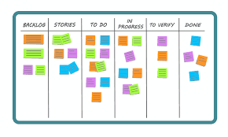

O Sprint backlog é a lista de itens a serem concluídos pela equipe de desenvolvimento no ciclo atual do Sprint Antes de cada Sprint, a equipe escolhe em quais itens do product backlog trabalhará. O Sprint backlog é flexível e pode evoluir durante um Sprint. Um dos formatos mais utilizados de sprint backlog é o task board:
Backlog: lista da qual o sprint é retirado;
Stories: é uma especificação de uma ou mais sentenças na linguagem de negócio, cotidiana do usuário final, ou usuário do sistema que captura o que um usuário faz ou necessita fazer como parte de sua função de trabalho;
To do: lista de tarefas a serem cumpridas na referente sprint;
In progress: lista de tarefas em andamento na referente sprint;
To verify: Lista de tarefas que foram realizadas e precisam ser avaliadas
Done: Lista de tarefas concluídas.
Como um -> Tipo de usuário;
Quero -> Realizar alguma tarefa;
Para que -> Eu possa alcançar algum objetivo/benefício/valor.
Exemplo: ”Como um vendedor responsável pelo setor de livros, eu quero procurar por livros filtrando pelo nome, para que seja possível verificar se o livro x está disponível para pronta entrega”.